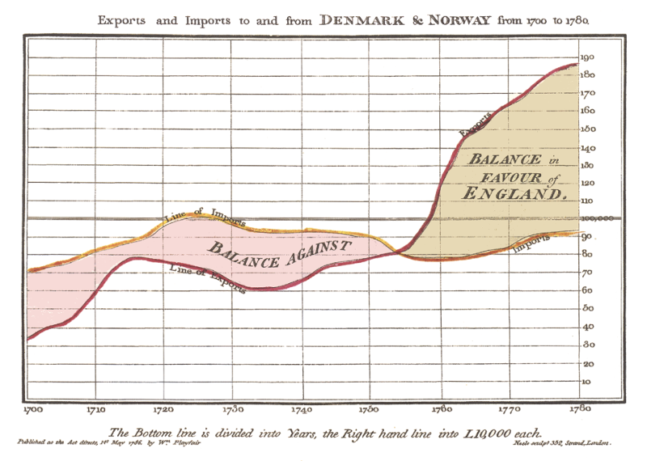
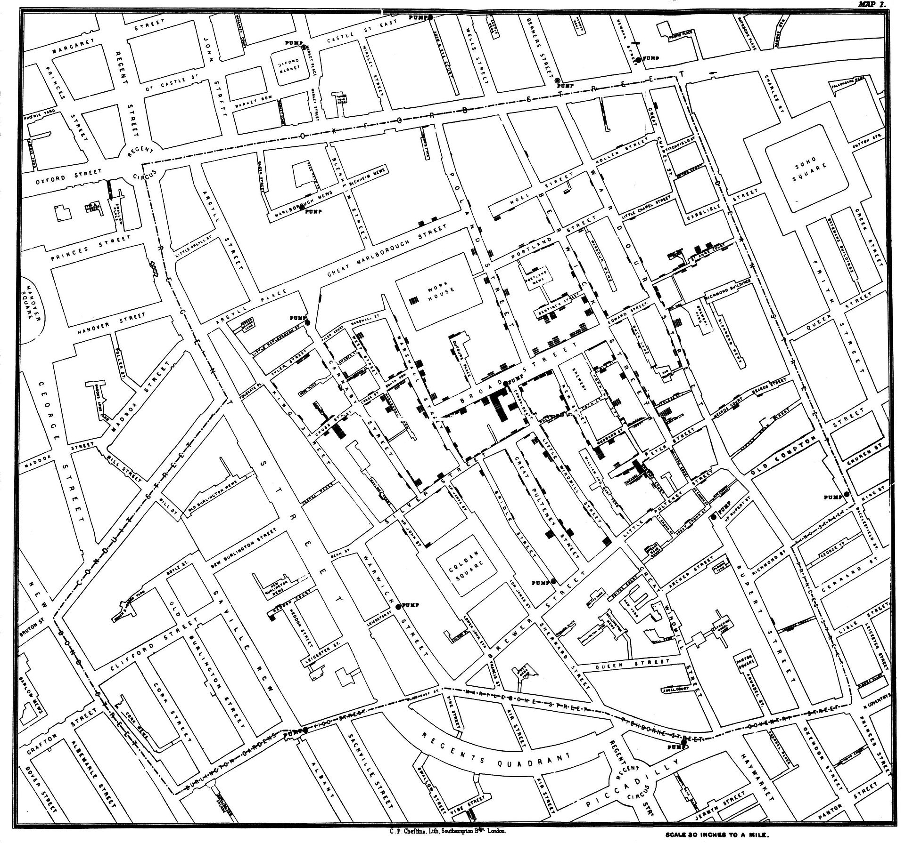
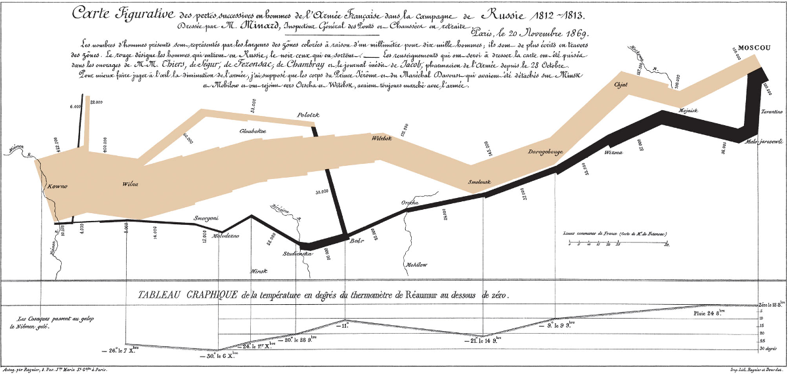
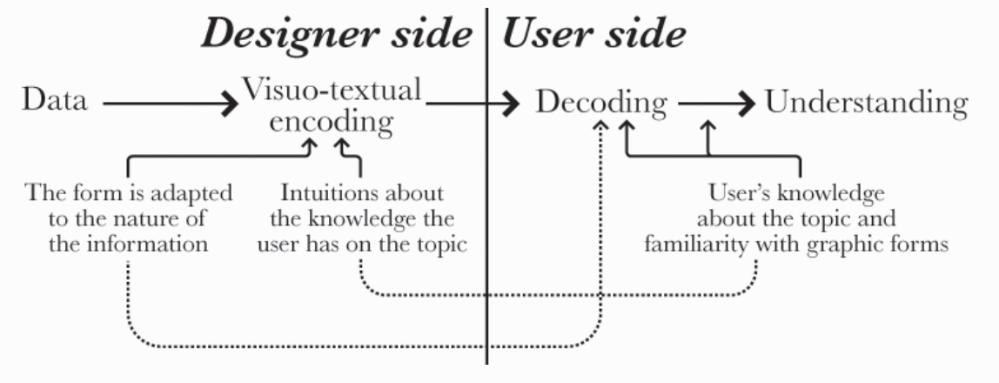
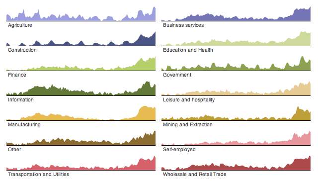
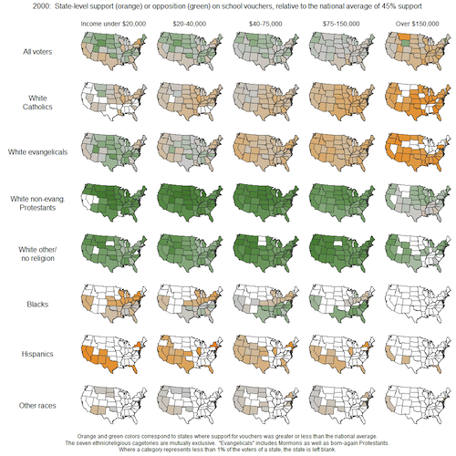
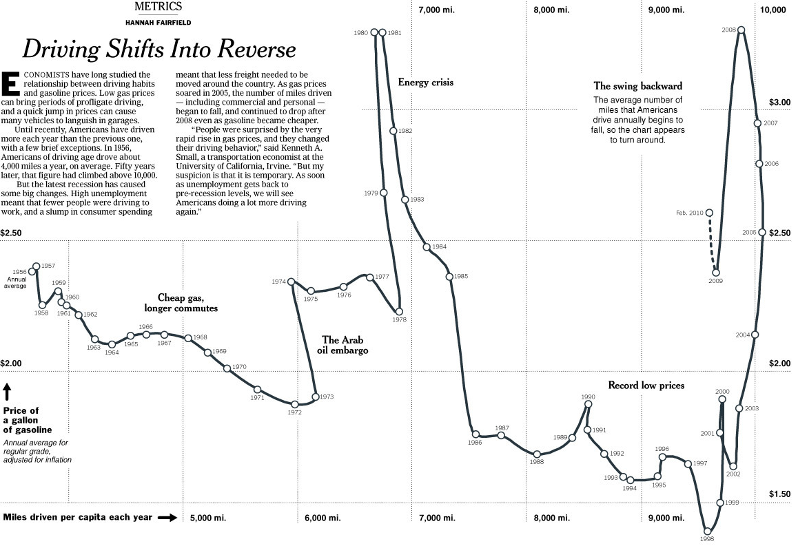
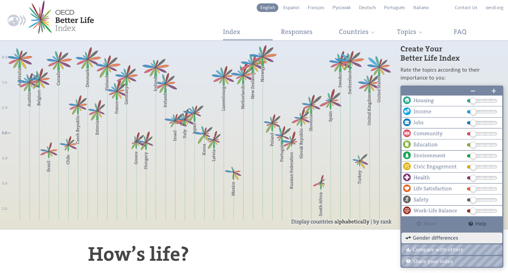
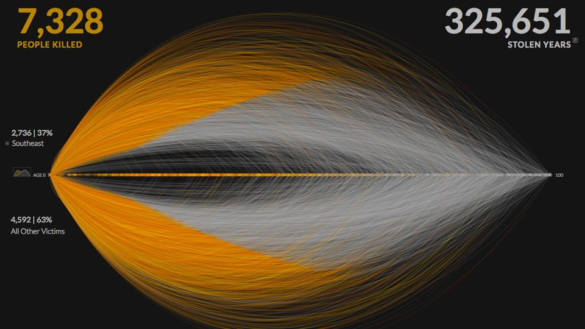

Data Visualisation
Exploring visions of truth and beauty
(More) about me
 /
/ 
Confession: For me, it started with Microsoft Excel. And I still use it...
(Too much) fun with spreadsheets
Beyond pivot tables and charts
Then at some point...you break the spreadsheet
This is so not fun. We'll talk about tools later too.
And you need more expressive visualisation tools...
The web...there are (almost) no limits
Inspiration
www.wefeelfine.org
A project from 2007
by Jonathan Harris
and Sep Kamvar
Thoughts?
The value of Visualisation
Lessons in math and history
Take a look at these four data sets...
...now let's visualise the data.
Ok no more numbers...
History lesson!
Four Classic Visualisations
Late 1700's: William Playfair invents charts...
1854: Jon Snow plot's cases of Cholera in London
...and traces the outbreak to a pump on Broad Street
Circa 1857:
Florence Nightingale
creates a visualisation of the
causes of deaths in the Crimean War
1869: Charles Minard plots Napoleon's march to Moscow
So why create visualisations?
- Answer questions (or ask them)
- Make decisions
- See data in context
- Find patterns
- Present an argument
- Tell a story. Inspire.
Adapted learnings from Jeff Heer
(University of Washington and Stanford)
So what makes a
good visualisation?
Truth+Beauty
You must be truthful to the data
"Designing an information graphic, a visual display of data or phenomena, is a moral act. We should strive for clarity, rigor, and depth"
Beauty matters
"Beauty in data visualization arises from hitting a certain sweet spot between order and chaos, exactly the point where the information is really rich and seems infinite, but there is still enough structure and guidance to lead you from one interesting discovery to the next one."
+Audience
Know your audience! They decode your visulisation.
But don't understimate curiosity.
Why we like visualisations
The Seeing Data Project found the following affect how people liked visualisations:
- Interest in the subject matter
- Trust in the source
- Existing beliefs and opinions
- Time available
- Emotions (first impression)
- Confidence (skills)
Visualisation types
Exploration or Explanation
These are very different types of visualisations that have very different audiences
Tips for charts
Lessons from cognitive science
Choose your visual encoding carefully
Think about how we see
Hierarchy of
perceptual
tasks
Cleveland and MacGill (1973)
Pie charts...
The dogma says no!
Data to Ink Ratio
Focus on the data. Get rid of chart junk
Example of reducing chart junk

Chart junk = gridlines, axes, decoration.
Small multiples
Information density. Comparison
Examples of small multiples
 These are basically an array of small charts that allow for better comparison. 'Sparklines' (now available in Excel) are similar (and can be attributed to Tufte)
Annotation
Highlight what matters. Tell the story.
Example of highlighting
the interesting
Example of an annotated story
By Hannah Fairfield now of the NY Times
Choosing the
right chart
1. Think about the task(s) you
want to enable: plot what
you need to plot.
2. Consult a guide
to seek out options.
3. Try different graphical forms
(don't trust the default).
4. Play.
<Oh and please...
Don't do this
Lets get digital!
"Information visualization is just a language with everything to be discovered, and we won’t discover new awesomeness without failing. The future of information visualization is being shaped by projects that fail in many senses and that are being criticized."
What digital does
- New tools with more power.
- More expression.
- More data. More depth.
- More sharing (web).
- More play.
Social network graphs
Digital cartography
Wind map by Fernanda Viegas and Martin Wattenberg
Creativity
Example of a stream graph by the NY Times
A 'new' chart type analysed by Lee Byron
and Martin Watternberg (2008)
Craft
'Hand made' vis of Kerouac's book On the Road by Stefanie Posavec
Interactivity
- New ways to engage with data.
- Users are 'explorers' of data worlds
- Richer, more personalised stories.
Information Seeking Mantra for interactive visualitions:
Design for a pattern of:
- Overview first.
- Zoom and Filter
- Details on Demand
OECD Better Life Index:
An interactive visualisation that follows the information seeking mantra
Gun Deaths in America
An interactive visualisation by design firm Periscopic
Uses a 'martini glass' structure that tells an emotive animated story before allowing users to interact.
Data visualiation in
Virtual Reality?
How to start
Find data first, then the tools.
And we're done...
Questions?
Link to this presentation
http://www.littlesketch.es/YLab/DoE/dataVis.html
Note: press "s" for additional notes.